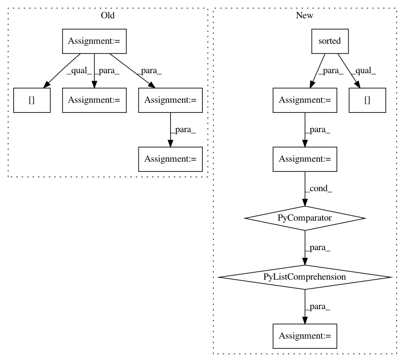

33375398b8c6096985e34c62684801442922746e,estnltk/text.py,Text,tag_verb_chains,#Text#,920
Before Change
verbchains = []
for sentence in sentences:
chains = self.__verbchain_detector.detectVerbChainsFromSent(sentence)
offset = 0
for chain in chains:
chain[PHRASE] = [idx+offset for idx in chain[PHRASE]]
chain[START] = self[WORDS][chain[PHRASE][0]][START]
chain[END] = self[WORDS][chain[PHRASE][-1]][END]
offset += len(sentence)
verbchains.extend(chains)
self[VERB_CHAINS] = verbchains
return self
After Change
chains = self.__verbchain_detector.detectVerbChainsFromSent( sentence )
for chain in chains:
// 1) Get spans for all words of the phrase
word_spans = [ ( sentence[idx][START], sentence[idx][END] ) \
for idx in sorted( chain[PHRASE] ) ]
// 2) Assign to the chain
chain[START] = [ span[0] for span in word_spans ]
chain[END] = [ span[1] for span in word_spans ]
verbchains.extend(chains)
self[VERB_CHAINS] = verbchains
return self
In pattern: SUPERPATTERN
Frequency: 3
Non-data size: 12
Instances
Project Name: estnltk/estnltk
Commit Name: 33375398b8c6096985e34c62684801442922746e
Time: 2015-12-21
Author: siim.orasmaa@ut.ee
File Name: estnltk/text.py
Class Name: Text
Method Name: tag_verb_chains
Project Name: Qiskit/qiskit-aqua
Commit Name: a194557ba754f9b14d473ff9e39a2bc2449e58c1
Time: 2018-07-06
Author: chenrich@us.ibm.com
File Name: qiskit_acqua/ising/maxcut.py
Class Name:
Method Name: sample_most_likely
Project Name: Qiskit/qiskit-aqua
Commit Name: d892fb853c4c296539034d2dbaf304c0d06a357d
Time: 2018-07-06
Author: 34400304+liupibm@users.noreply.github.com
File Name: qiskit_acqua/ising/graphpartition.py
Class Name:
Method Name: sample_most_likely